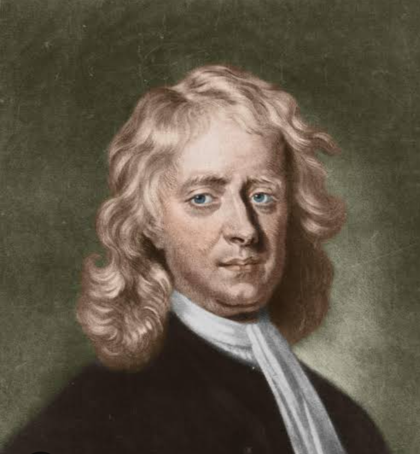

Tribute of Isaac Newton
Welcome
WHO IS ISAAC NEWTON?

Sir Isaac Newton was an English polymath active as a mathemathician, physicist, astronomer, alchemist, theologian, and author.
He was a key figure in the scientific revolution and the enlightenment that followed.
Sir Isaac Newton's Inventions.
- Newtonian Apocalypse
- Newton's Law of Cooling
- Newton Perfected Coinage
- Newton and the Reflecting Telescope
- Rainbows and White Light
- Advanced Mathemathics Principles
- The Philosopher's Stone
- Laws of Motion
- Newtonian Cat Doors
- Newton's Orbital Cannon
Sir Isaac Newton Achievements.
- Developed Calculus
- Formulated Law of Motion
- Discovered Law of Gravity
- Built the First Telescope
Sir Isaac Newton Awards and Honors.
- Knighted by Queen Anne
- President of the Royal Society
- Member of Parliament
- Master of the Royal Mint
- Named in his Honor
Sir Isaac Newton will always be remembered for his great inventions in the field of mathemathics and science, and his achievements.